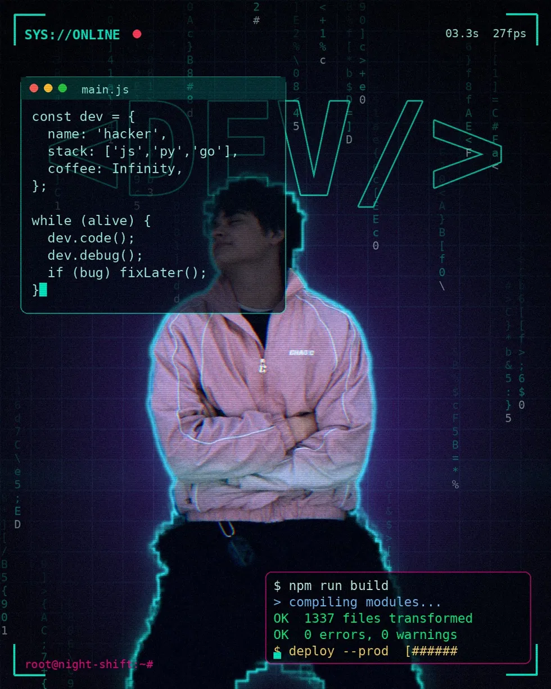

Front-End Developer
Владислав
Винничек
Создаю современные веб-интерфейсы с фокусом на скорость, аккуратность и удобство пользователей. Разрабатываю проекты на React, Next.js и TypeScript.

• HTML5 / CSS3
• JavaScript (ES6+)
• TypeScript
• React.js / Next.js
• Tailwind CSS
• REST API / WebSockets
• Git & Webpack/Vite
• HTML5 / CSS3
• JavaScript (ES6+)
• TypeScript
• React.js / Next.js
• Tailwind CSS
• REST API / WebSockets
• Git & Webpack/Vite
Превращаю сложные задачи в удобные интерфейсы
Специализируюсь на верстке и фронтенд-разработке веб-сайтов и приложений. Мой приоритет — чистый код, точное соответствие дизайну в Figma (Pixel Perfect) и высокая скорость загрузки страниц (Google PageSpeed 90+).
React.js
Next.js
TypeScript
Tailwind CSS
Redux Toolkit / Zustand
HTML5 / CSS3 / SASS
Developer.tsx
const developer = {
name: 'Владислав Винничек',
role: 'Front-end',
stack: [
'React', 'Next.js',
'TypeScript',
],
pixelPerfect: true,
pageSpeed: '90+',
};
// готов к новым проектам
await developer.build(idea)90+
PageSpeed
1:1
Figma
100%
Адаптив